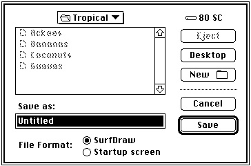
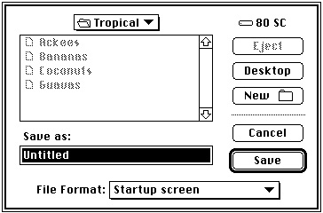
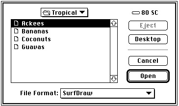
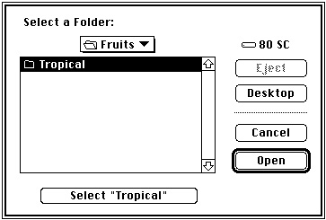
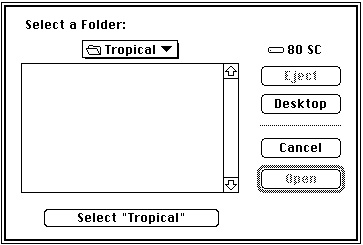
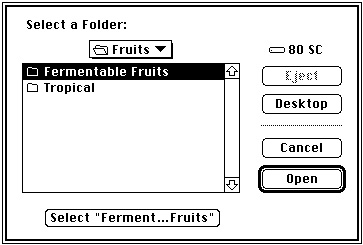
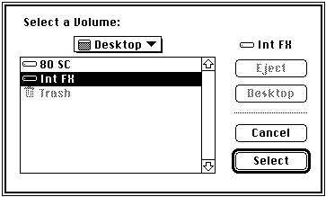

Legacy Document
Important: The information in this document is obsolete and should not be used for new development.
Important: The information in this document is obsolete and should not be used for new development.


Customized User Interfaces
The standard user interfaces provided by theStandardGetFileandStandardPutFileprocedures might not be adequate for the needs of certain applications. To handle such cases, the Standard File Package provides several routines that you can use to present a customized user interface when opening or saving files. This section gives some simple examples of how you might want to customize the user interfaces and suggests some guidelines you should follow when doing so.
- IMPORTANT
- You should alter the standard user interfaces only if necessary. Apple Computer, Inc., does not guarantee future compatibility for your application if you use a customized dialog box.

Saving Files
Perhaps the most common reason to customize one of the Standard File Package dialog boxes is to allow the user to save a document in one of several file formats supported by the application. For example, a word-processing application might let the user save a document in the application's own format, in an interchange format, as a file of type'TEXT', and so on.It is usually best to allow the user to select a file format from within the dialog box displayed in response to a Save or Save As menu command. To do this, you need to
add items to the standard dialog box and process user actions in those new items.If your application supports only a few file formats, you could simply add the required number of radio buttons to the standard dialog box, as illustrated in Figure 3-5. The application presenting this dialog box supports only two file formats, its own proprietary format (SurfDraw) and the format used for startup screens.
Figure 3-5 The Save dialog box customized with radio buttons

If your application supports more than a couple of alternate file formats, you could add a pop-up menu, as shown in Figure 3-6.
Figure 3-6 The Save dialog box customized with a pop-up menu

Opening Files
Your application might also allow the user to open a number of different types of files. In this case, there is less need to customize the Open dialog box than the Save dialog box because you can simply list all the kinds of files your application supports. To avoid clutter in the list of files and folders, however, you might wish to filter out all but one of those types. In this way, the user can dynamically select which type of file to view in the list.Once again, you might accomplish this by adding radio buttons or a pop-up menu to
the Open dialog box, depending on the number of different file types your application supports. Figure 3-7 illustrates a customized Open dialog box that contains a pop-up menu. Only files of the indicated type (and, of course, folders) appear in the list of items available to open.Figure 3-7 The Open dialog box customized with a pop-up menu

For details on some techniques you can use to add items to the standard user interface and process user actions with those additional items, see "Customizing the User Interface" on page 3-16. Note in particular that Listing 3-3, Listing 3-8, and Listing 3-9 together provide a fairly complete implementation of the pop-up menu illustrated in Figure 3-7.
- Note
- Remember that the user might also open one of your application's documents from the Finder (by double-clicking its icon, for example). As a result, you should in general avoid customizing the Open dialog box for files.

Selecting Volumes and Directories
Sometimes you need to allow the user to select a directory or a volume, not a file. For example, the user might want to select a directory as a first step in searching all the files in the directory for some important information. Similarly, the user might need to select a volume before backing up all the files on that volume.The standard Open dialog box, however, is designed for selecting files, not volumes or directories. When the user selects a volume or directory from the items in the displayed list and clicks the Open button, the volume or directory is opened and its contents are displayed in the list. The standard Open dialog boxes provide no obvious mechanism for choosing a selected directory instead of opening it.
To allow the user to select a directory--including the volume's root directory, the volume itself--you can add an additional button to the standard Open dialog box. By clicking this button, the user can select a highlighted directory, not open it. This button gives the user an obvious way to select a directory while preserving the well-known mechanism for opening directories to search for the desired directory. Figure 3-8 illustrates the standard Open dialog box modified to include a Select button and a prompt informing the user of the type of action required.
Figure 3-8 The Open dialog box customized to allow selection of a directory

The Select button should display the name of the directory that is selected if the user clicks the button. This, together with the prompt displayed at the top of the dialog box, helps the user differentiate this directory selection dialog box from the standard file opening dialog box. All the other items in the dialog box should maintain their standard appearance and behavior. Any existing keyboard equivalents (in particular, the use of Return and Enter to select the default button) should be preserved. Command-S is recommended as a keyboard equivalent for the new Select button, paralleling the use of Command-D to select the Desktop button and Command-O to select the Open button.
To help maintain consistency among applications using this scheme for selecting directories, your application should open the folder displayed in the pop-up menu if there is no selected item and the user clicks the Select button. In addition, you should disable the Open button if no directory is currently selected. Figure 3-9 illustrates the recommended appearance of the directory selection dialog box in this case.
Figure 3-9 The Open dialog box when no directory is selected

If the name of the directory is too long to fit in the Select button, you should abbreviate the name using an ellipsis character, as shown in Figure 3-10.
Figure 3-10 The Open dialog box with a long directory name abbreviated

See "Selecting a Directory" beginning on page 3-34 for details on how you can create and manage a directory selection dialog box.
The directory selection dialog boxes illustrated here allow the user to specify the root directory in a volume, which effectively selects the volume itself. However, you might want to limit the user's selections to the available volumes. To do that, you can create a volume selection dialog box, shown in Figure 3-11.
Figure 3-11 A volume selection dialog box

Notice that the volume selection dialog box uses a prompt specific to selecting a volume and that the Open button is now a Select button. There is no need for a separate Select button, because the user should not be allowed to open any of the listed volumes. (For this same reason, the pop-up menu should not pop up if clicked.) See "Selecting a Volume" on page 3-38 for instructions on implementing a volume selection dialog box.
User Interface Guidelines
In general, you should customize the user interface only if necessary. If you do modify the standard dialog boxes presented by the Standard File Package, you should keep these user interface guidelines in mind:
Your overriding concern should be to make the customized file identification dialog boxes in your application as similar to the standard dialog boxes as possible while providing the additional capabilities you need.
- Customize a dialog box only by adding items to the standard dialog boxes. Avoid removing existing items from the standard boxes or altering the operation of existing items. In particular, you should avoid modifying the keyboard equivalents recognized by the Standard File Package.
- Add only those items that are necessary for your application to complete the requested action successfully. Avoid adding items that provide unnecessary information or items that provide no information at all (such as logos, icons, or
other "window-dressing").- Whenever possible, use controls such as radio buttons or pop-up menus whose effects are visible within the dialog box itself. Avoid controls whose use calls subsidiary modal dialog boxes that the user must dismiss before continuing.
- Use controls or other items that are already familiar to the user. Avoid using customized controls that are not also used elsewhere in your application.